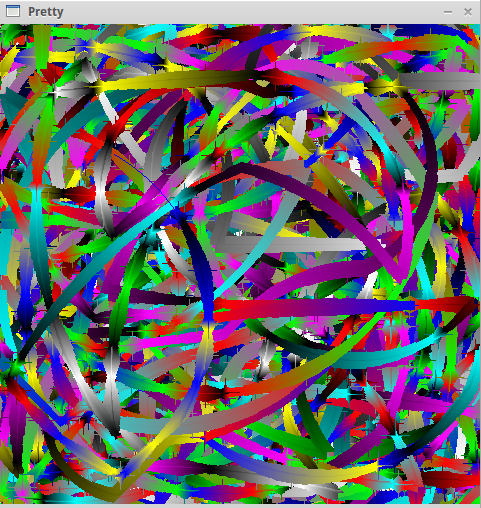

Pretty Pictures
Pretty pictures is a program that is meant to emulate random brush strokes and random colors. After a while, most pictures seem to look the same, like this:

You can download pretty pictures
here
.